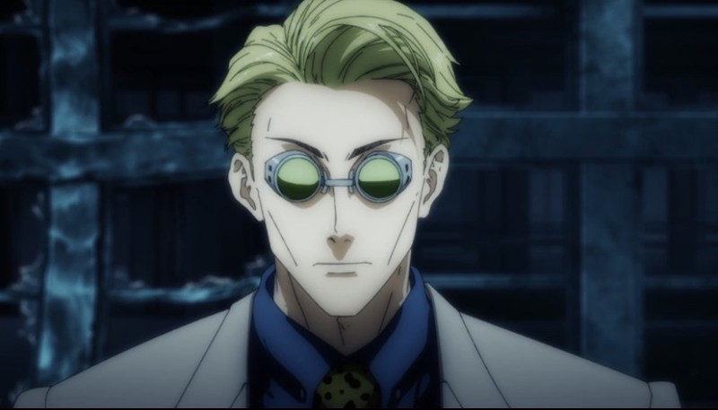
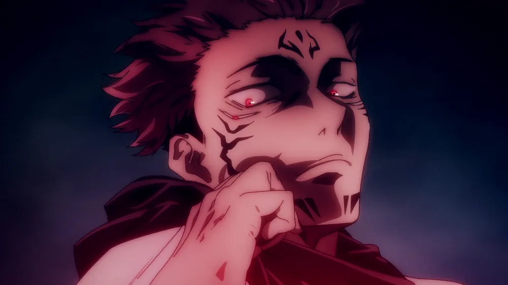

경이로운 신체 능력을 가진 고등학생 이타도리 유지는 병상에 누워 있는 할아버지의 병문안을 가는 것이 일과이다. 그러던 어느 날, 학교에 잠들어 있던 ‘주물(呪物)’의 봉인이 풀리면서 괴물이 나타나고 이타도리는 미처 도망치지 못한 선배를 구하기 위해 학교 건물로 뛰어드는데?!
주술회전
2018~현재
주요인물 전투신 모음
wiht youtube
고죠 사토루
도쿄 도립 주술 고등전문학교 1학년의 담임을 맡은 4명의 특급 중 한 명이자 자타공인 현대 최강의 주술사. 그리고 고죠 가의 당주이기도 하다. 위험인물을 처리하려는 보수적인 상부와 다르게 '썩어빠진 주술계를 갈아엎겠다'는 주술계 내에서도 손꼽힐 정도의 과격하면서도 혁신적인 사상을 가지고 있으며 옷코츠 유타나 이타도리 유지 등의 인재를 보호, 육성하기 위해 상층부와 대립하는 걸 마다하지 않고 제자들의 성장을 지켜보는 좋은 선생님이기도 하다.

나나미 켄토
도쿄 주술고전을 졸업한 1급 주술사. 고죠 사토루의 1년 후배다. 고죠의 소개에 의하면 탈 샐러리맨 주술사. 원래 주술사였지만 주술사를 하면서 주술사가 거지 같다고 생각해 이후 주술사를 그만두고 샐러리맨이 되었다. 하지만 회사 생활을 하면서 일반적인 노동 역시 거지 같다는 생각이 들어 어차피 둘 다 거지 같다면 그나마 적성에 맞는 걸 선택하겠다며 고죠에게 연락해 주술사로 복귀했다.

료멘 스쿠나
태생적으로 주령이 아닌 인간이었으며 생전부터 두 얼굴에 네 개의 눈과 팔을 가졌다고 한다. 그 모습과 강함이 마치 료멘스쿠나 같다 하여 료멘스쿠나의 이명을 얻었다. 작중에서는 보통 이를 줄여 '스쿠나'라고 부른다. 다만 본명이 무엇인지는 불명.
이누마키 토게
주언사의 후예로, 이누마키 가문은 대대로 주언사였던 듯하다. 말 한 마디만으로 저주가 발동해 주변에 피해를 줄 수 있는 능력이지만 발동 여부를 본인의 의사대로 제어할 수 없기에 평소 정상적인 대화는 하지 못하며, 의미가 담기지 않는 주먹밥 재료를 말하는 식으로 말을 제한하여 대화한다. 심지어 혼자 있을 때도 주먹밥 재료로 말한다. 그 이유로 판다가 말하길 옛날에 말 실수를 하여 큰 후회를 한 적이 있었기에 항상 조심해하는 것이다.